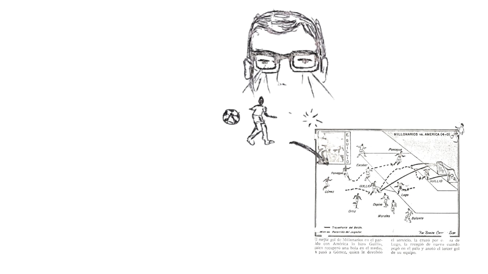

UNA JUGADA
DIBUJADA
Antes de convertirse en datos, una jugada también podía convertirse en un dibujo.

Este recorrido muestra una de las cosas que el croquis conserva de la jugada: la posición y el desplazamiento de un jugador dentro de una secuencia específica.
Del partido completo, se selecciona un momento y se transforma en una serie de posiciones sobre el papel.
La trayectoria del balón permite reconstruir el recorrido de la jugada y relacionar las posiciones de los jugadores dentro de la acción.
El croquis no reproduce el movimiento en tiempo real: lo convierte en una secuencia fija que puede leerse sobre el papel.